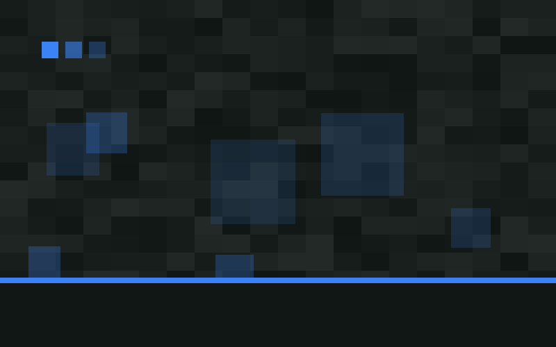
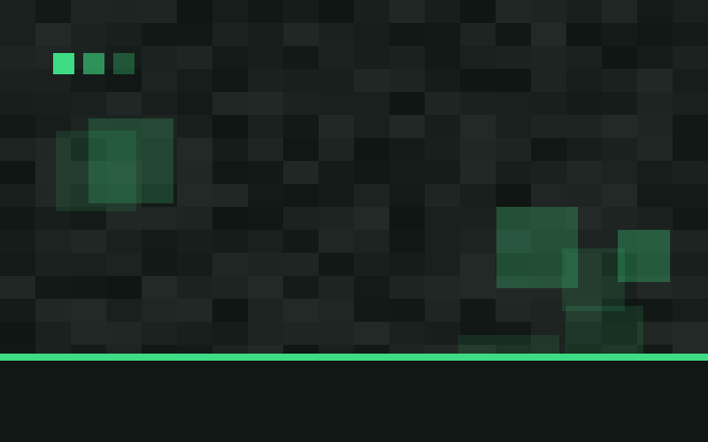
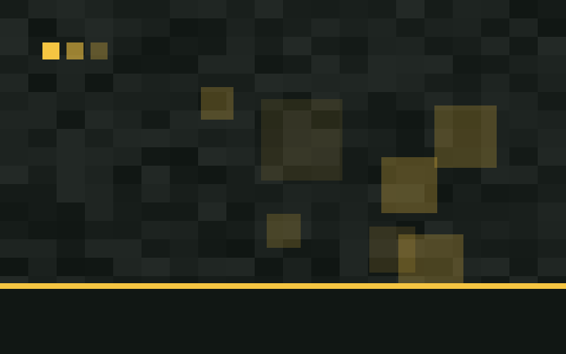
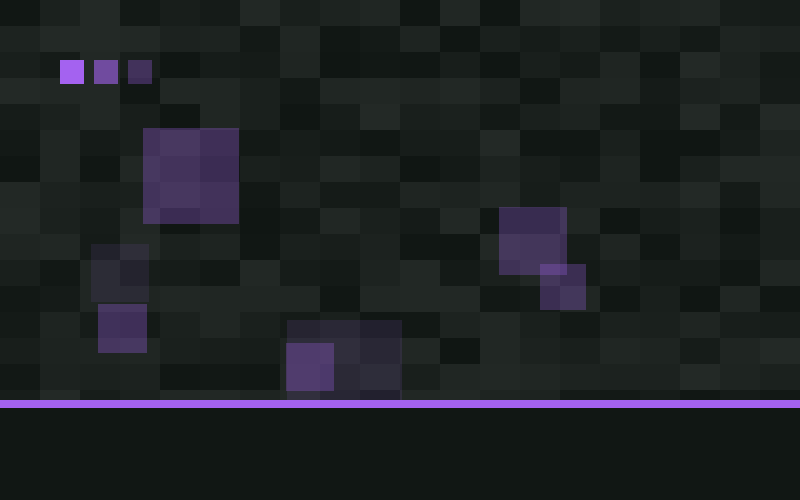
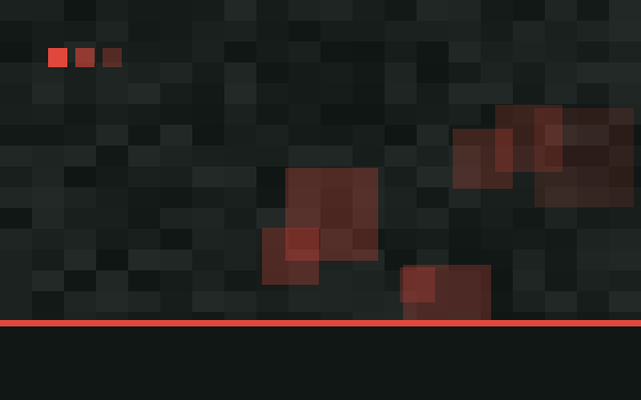

Відкрито станцію «Ехо-Шард»
Аметистова лінія отримала четверту станцію з унікальним скалк-склепінням та звуковою навігацією.
Відкриття станцій, нові потяги, реконструкції та життя мережі.
Аметистова лінія отримала четверту станцію з унікальним скалк-склепінням та звуковою навігацією.

Найшвидший склад мережі розганяється до 78 блоків за секунду та має скалк-систему гальмування.

П'ята лінія метрополітену з'єднала Стародавнє Місто з Краєм і додала три пересадкові вузли.

Оновлено вестибюль, замінено освітлення та відновлено історичну мозаїку з кольорової кераміки.

Четверте депо мережі обслуговує склади Золотої та Аметистової ліній.

За шість років мережа зросла з однієї лінії до п'яти та перевезла мільйони пасажирів.